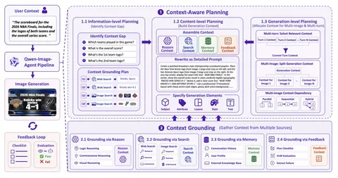

Сегодня разбираем статью о Qwen-Image-Agent — не столько техническую, сколько идеологическую. Авторы предлагают добавить перед генеративной моделью агентский пайплайн, который собирает недостающий контекст.
Главной проблемой называют Context Gap — разрыв между тем, что пользователь написал, и тем, что модели нужно для качественной генерации. Дело в том, что промпт юзера может быть неполным: не хватает деталей, референсов или контекста предыдущего диалога. Кроме того, он обычно не попадает в распределение, на котором училась модель.
Например, пользователь просит нарисовать скорборд финала NBA 2026 с логотипами команд и итоговым счётом. Но генеративная модель может не знать, кто играл, какой был счёт и как выглядят логотипы. Если отправить запрос напрямую, она, скорее всего, что-нибудь нагаллюцинирует.
Qwen-Image-Agent сначала определяет, какой информации не хватает, и формулирует вопросы. Затем они направляются в нужный механизм:
Когда нужная информация собрана, система переписывает промпт через обычную репромптиловку, но с контекстом из внешних источников.
Дальше генерируется изображение, а VLM-as-a-Judge проверяет его по чек-листу. Если всё выполнено, картинка возвращается пользователю. Если нет, система смотрит оставшийся Context Gap, уточняет промпт и запускает новую итерацию.
В пайплайне задействованы две модели. Мультимодальная — отвечает за планирование, ризонинг, поиск и оценку результата, а генеративная — за синтез изображения.
Дополнительного обучения нет, вся система работает zero-shot на системных промптах. Именно в системном промпте задаются правила, когда использовать Reasoning, а когда Search.
Есть момент, что граница между Reasoning и Search довольно размыта. Общие и стабильные знания можно брать из весов модели, а точные, визуальные или динамические данные лучше искать. (Например, модель может примерно знать логотип команды, но для точного воспроизведения надёжнее найти референс.)
Отдельный уровень планирования нужен для multi-image- и multi-turn-генерации. Например, при создании презентации несколько слайдов должны сохранять единый стиль. В одном из примеров система сначала генерирует титульный слайд, а затем использует его как стилевой референс для остальных. При этом из памяти извлекается только релевантный контекст, иначе он быстро раздуется.
Важная часть статьи — Image Agent Bench, бенчмарк для end-to-end-оценки агентских систем генерации. Проверяет четыре способности: Planning, Reasoning, Search и Memory. Для каждого кейса есть свой чек-лист, всего в них около 1800 пунктов.
Для оценки используют Pass Rate, Checklist Accuracy и интегральный Image Agent Score. Срезы взвешиваются как 0,3 / 0,3 / 0,3 / 0,1 — памяти дают меньший вес, потому что она используется только в multi-turn-задачах.
В работе привели абляцию, по которой агентский пайплайн получает около 45 баллов против 17 у базовой Qwen-Image без агента. Замена как генеративной, так и ризонящей модели на более слабую результат снизила, но агентские версии всё равно остаются лучше прямой генерации.
Отключение Feedback Loop приводит к самому маленькому падению качества. Фидбек при этом очень дорогой, так как нужен дополнительный вызов VLM-джаджа, а при ошибке требуется повторная генерация. Возможно, планирование, поиск и ризонинг уже закрывают большую часть Context Gap, поэтому дополнительный выигрыш от фидбека невелик.
Можно сделать вывод, что авторы не предлагают принципиально новых компонентов, но зато удобно собирают поиск, ризонинг, память, репромптинг и оценку в единый фреймворк. Качество растёт, но вместе с ним растут вычисления, контекст и сложность пайплайна.
Разбор подготовил
CV Time
